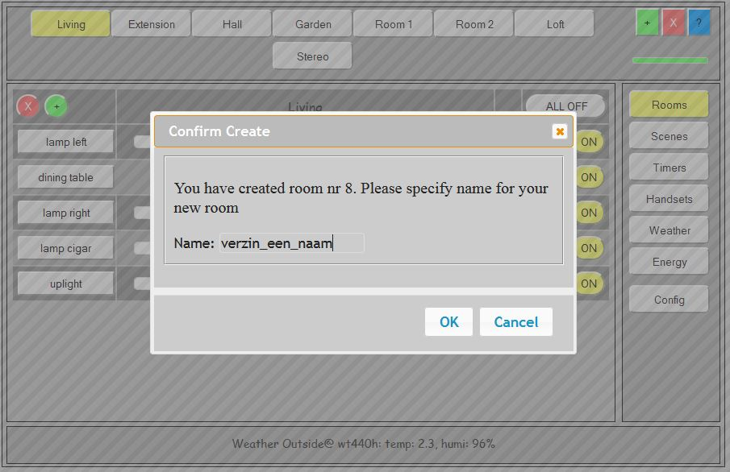
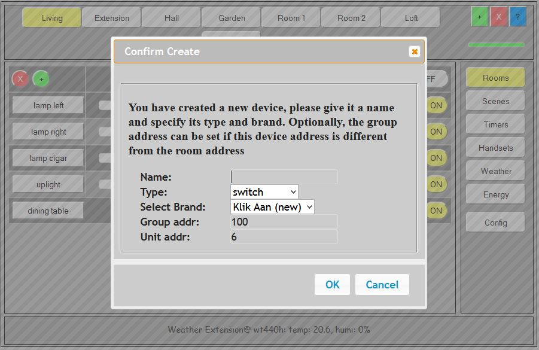
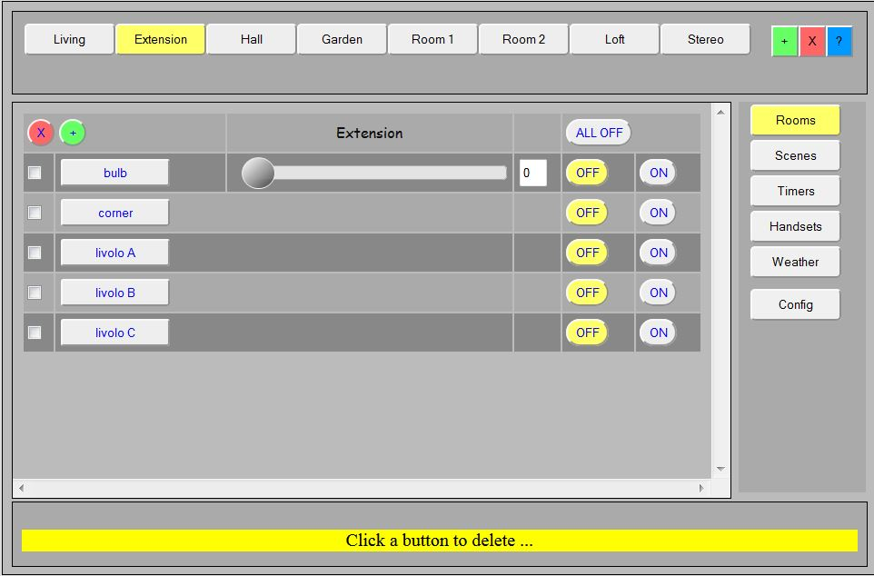
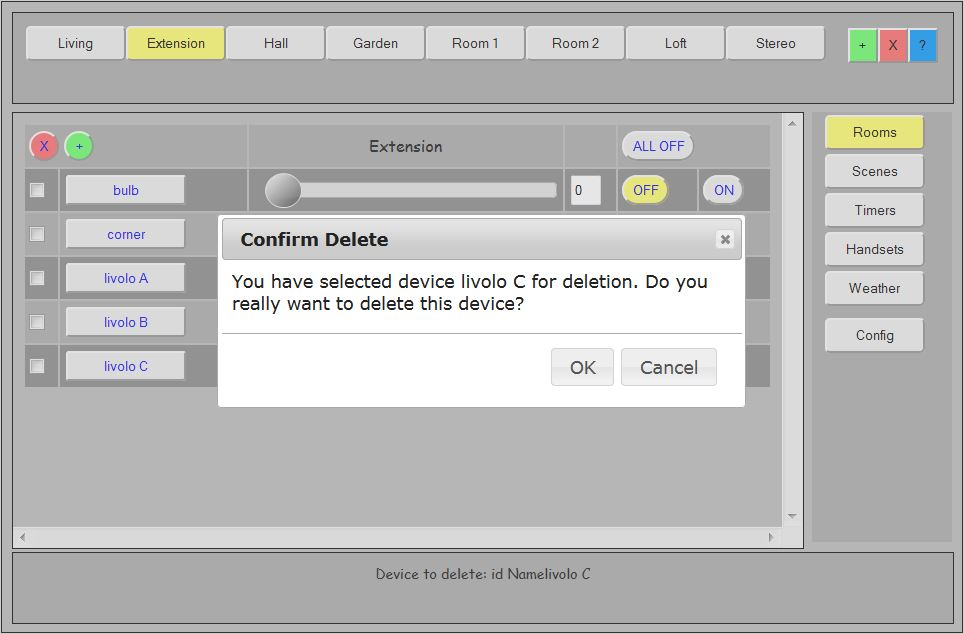
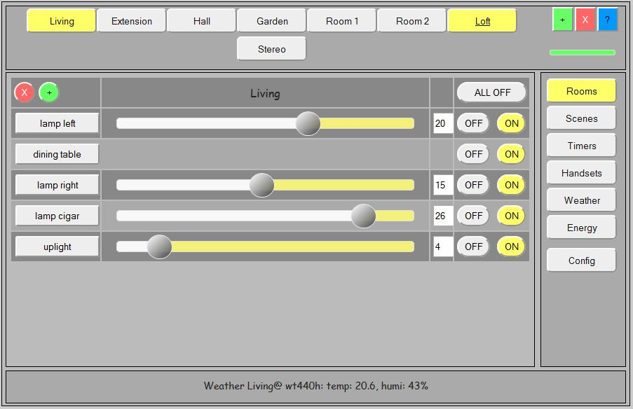

This part of the documentation describes the rooms screen and what you can (and sometimes cannot) do with the rooms screen. The screenshots below are good representations of the screens you will see on your own computer or tablet. But please keep in mind that sometime the style has changes to there may be minor color scheme differences in the screeshots. Also, as we introduce new functions on a regular basis, recent functions such as weather are not yet present in all screenshots on this page. I will change them over time, but as it makes no difference for the room screen, these older pictures may be here for some time.


As you see, the GUI interface is designed to operate (and manage) all tasks for the connected devices and minimize the need for manual changing of configuration files etc. let alone making configuration changes at compile time.
In case I missed something, please send me an email or make a note on this page. For the moment I'm the only author of LamPI so it can tak a few days before I answer...
The following actions are defined for the Rooms screen:
This section describes how to add a room to the system. In principle 8 rooms will fit on the top line of the rooms screen without problems, but the maximum is 16, so additional rooms will be put on a second line in the gui_header section.
NOTE: For some reason Internet explorer will not behave well when there are more than 8 rooms defined, however Safari and Firefox do it correctly.

Adding a room consists of a few basisc steps:
If you press the red X button in the header then you can delete a room from the system. After selecting the button its color changes to yellow.

As you see, deleting a room is easy and takes less time than you might think. Be careful though, as we have NO possibility to bring back/restore your room once you have deleted it from the system.
LamPI has a dedicated help function in the upper right corner (in the header section)
This section describes how you can add devices to a room in the rooms screen. In the example below we like to add a device to the currently active screen "Living".
Start the process by pressing the little round green "+"-button in the content screen. As a result the following popup comes up in the active room screen.

Give your device a name (free to choose), select the type of device (switch or dimmer) and select the brand of the device. The LamPI system will find the first free logical address and assign it to the new device. For example in the example above the system would probably assing index/address number 5 to the new switch. The group and address of the device/receiver in the screen is also used in the communication to the device. That is because every device is unieuly identified by both its group and within that group by its individual device id. Together, group+device address uniquely idendity every receiver. So unless you like to address two devices with the same address on purpose (I do not see the benefit of doing this), make sure that every device has this uniue identification. Every device command (sent over the air) is of the following form: device_command -g <group> -n <device id> <on/off or dimlevel>.
The group address is the address that LamPI uses for this room. In the example above the logical room number is 1, and we use the group address 100 for that room. For room Extension for example the logical index is 6, so for communication with devices/receivers we use group address 5 (99+6).
I would recommend to NOT change the group address nor the device index for klikaanklikuit devices.
For klikaanklikuit devices you are done at that moment, as the group is LamPI standard (and you should probably not change that) and the address assigned will be given to the received at the moment of pairing. For klikaanklik uit you make this connection from the logical device in LamPI to the physical device in the receiver by pressing the pairing button on the receiver. At that moment, the system connects to the receiver and the device acceepts the address that you give it and you are all set.
Apart from klikaanklikuit, where both the group address and the individual addresses are dynamically asigned to the receiver device during pairing, all other systems require you to set a group address to the device and it's device address. For these brands you have to set a unique physical address on the receiver itself, and you have to make sure that that address gets known to LamPI.
Why is this important? Well imagine that you can only set group addresses in the range of 0 to 31 (as with Action) and you can only set the device id in the range of 0 to 4 (as in Action) that you would be in trouble in the example above if you would let the system choose the addressing for you. The group address would be 100, which is too high, and the next free device address could be 5 or so which may be OK for this example but the next device to add would be assigned device id 6 which is too high for this brand of receivers. The only option would be that the system allows you to freely modify the group and device id for this set of devices.
So how to do this? Often you have to do this by setting dip switches or so and in other cases that device address is fixed. So for example for brands suchs as Action it may be wise to make sure that the logical device number in LamPI connects to the physical device number that you set in the receiver. In the LamPI room screen you can set the group address to - for example - 31 which in my case matches with one of the Action sets I have in house.
NOTE: You (YOU) ae responsible for making sure that all logical addressing in the screen matches with the physical addresses you use for your device. If either group address or device address do not match wih the receiver settings, your device will not work until you make these 2 equal.
Some configuration can be made in the LamPI room screen itself but can be made even more simple in the database.cfg file. If you make changes in the database.cfg file, please do not foret to load that file again in the config screen.
Deleting a device from your current room is a simple process. First select your room, and then press the red-round-X in the top-left corner of the content section. Now you are ready to make a selection for deletion.

Now select the device you want to delete by clicking the small sqare select box of that device in the row. The following pop-up will show if you would have selected the "Livolo C" device.

If you confirm by cliking "OK" the receiver device will be permanently removed from LamPI.
This means that not only the device is removed from the GUI interface of LamPI, but the xorresponding device entry is also permanently removed from the MySQL database. There is NO way to undo this operation other than adding this device again to the system.
The system allows you to sort the order in which you see the devices displayed in your room. For the moment the sorted array is not permanent but lives during the session. Below you find the same room as on the top of the page, but now the "dining table" row moved to the 2nd position in the screen.


{kind=link}